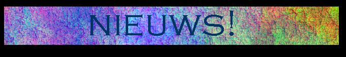

| Terug naar welkomstpagina! |

Verhuisplannen, Internet, Evolutie-theorie.
Onlangs heeft de DuWo het besluit aangedurfd om ons een woning toe te wijzen in een van de nieuw te bouwen studentenflats aan de Balthasar van der Polweg (tegenover bouwkunde). Daar zijn wij heel tevreden mee, omdat:
De huispagina van Kromme Heut op het Wereld Omspannende Spinnerag is sinds kort weer eens vernieuwd! Ga snel kijken: www.oli.tudelft.nl/csr/leden/huizen/kromme_heut/kromme-heut_nl.html |
Op 24 november 1859 kwam Charles Darwins
The Origin of Species uit in een oplage van 1250 stuks.
Het boek was dezelfde dag nog uitverkocht!
Zijn boek heeft het aanzien van de westerse wereld enorm veranderd. Het is de basis van het atheïstisch denken geworden en heeft grote religieuze, maatschappelijke en sociale gevolgen gehad.
Darwin heeft ontdekt hoe variatie kan ontstaan in de natuur. Maar hij heeft niet ontdekt hoe de soorten zijn ontstaan. Daarin is hij een stap te ver gegaan. Dat was ook niet zo verwonderlijk, want hij had geen enkel benul van de complexe biochemische werkelijkheid die aan de erfelijkheid ten grondslag ligt. DNA, genen, biochemie, het was in zijn tijd nog niet bekend.
De 'wetenschap' heeft zich na hem voortdurend in bochten moeten wringen om bij nieuwe ontdekkingen de evolutie-gedachte staande te houden. Maar de tijd is er nu, dat steeds meer wetenschappers 'ontdekken' dat evolutie een biochemische onmogelijkheid is.
Peter Scheele heeft een boek geschreven over deze materie. Dit boek luidt het einde van de evolutie-theorie in, maar geeft ook een wetenschappelijk alternatief voor de biologische verandering die we waar kunnen nemen: de degeneratie-theorie. Het boek wil afrekenen met Darwin en de evolutie-gedachte van het ontstaan van alle soorten uit gemeenschappelijke voorouders. Daarom zal dit boek op 24 november van dit jaar uitgegeven worden.
Het is mogelijk om NU al in te tekenen en een exemplaar te bestellen. Op die manier hopen we Darwins record van 1250 stuks ruimschoots te kunnen breken.
Meer informatie: www.peter-insite.nl/degeneratie/welkom.html
Wil je een boek à f 37,50 (ex. portokosten) bestellen dan kun je dat doen via: g.bloemendal@bk.tudelft.nl. Dit scheelt je in de portokosten!
| Terug naar welkomstpagina! | vervaardigd 30-08-97 door Kromme Heut |